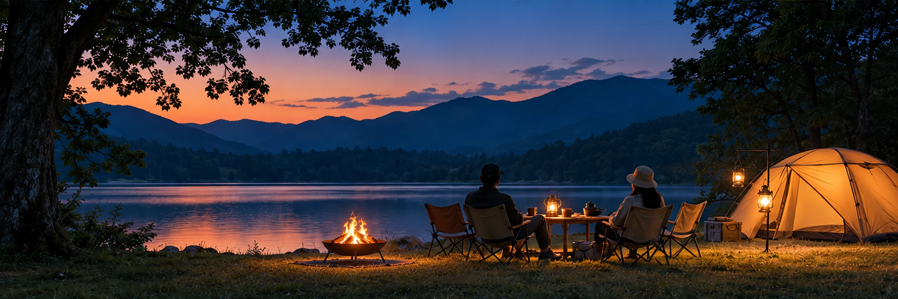

SOTOJITAKU CAMP / BEGINNER GUIDE
焚き火は、
火を消す準備まで。
焚き火台を買えば終わりではありません。地面の保護、手元の安全、消火までを一つの装備として考えます。
焚き火はキャンプの魅力の一つですが、火を扱う体験です。焚き火台だけでなく、火ばさみ、耐熱グローブ、必要に応じた地面保護、消火用の水などを準備し、キャンプ場ごとのルールを確認してから始めます。風が強い、乾燥しているなど安全に続けにくい条件なら、やらない判断も計画に入れておきます。
01 キャンプ場のルールを先に確認
直火の可否、焚き火台の使用条件、焚き火シートの要否、灰や燃え残りの処理方法、消灯時間などは施設ごとに異なります。現地に着いてから知るのではなく、予約時に公式案内を確認します。
ルールが不明な場合は、管理者へ確認してから行います。
02 操作する道具と地面を守る道具を用意
薪を動かす火ばさみ、手を熱から守る耐熱グローブ、施設や地面条件に応じた保護シートなどを準備します。焚き火台の脚や火床の高さも製品ごとに違うため、メーカーの使用方法に従います。
子どもがいる場合は、火の周囲を通り道にせず、大人が常に見られる配置にします。
03 消火を終えるまでが焚き火
消火用の水を用意し、燃え残りや灰の処理方法を確認します。寝る直前まで大きな火を続けると片付けが遅くなるため、終了時間を先に決めておくと安心です。火を残したままその場を離れません。
テント内や密閉空間で焚き火・炭火などの火器を使用しないでください。風が強いときは中止する判断を優先します。
出発前のチェック
- キャンプ場の焚き火ルール
- 焚き火台
- 火ばさみ
- 耐熱グローブ
- 必要に応じた保護シート
- 消火用の水
- 薪・着火用品
- 灰・燃え残りの処理方法
“できる”より“やめられる”計画焚き火を絶対に行う予定にせず、風や施設ルールによって中止しても楽しめる過ごし方を一つ用意しておくと、無理をしなくて済みます。
次に読む
MAKE YOUR CAMP
条件を選ぶと、必要なものが変わります。
7つの質問から、持ち物・買う/借りる・ごはん・予算・1日の流れまで、あなたのキャンプとして組み立てます。
SOTOJITAKU CAMPでつくる →